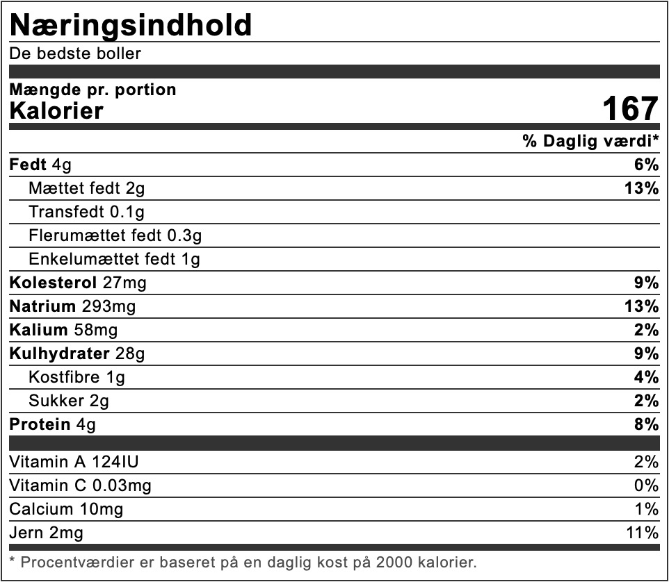

Nybagte boller er noget af det allerbedste bagværk, og her er min grundopskrift på boller, der er bløde, men med sprød skorpe.
Ret: brød
Køkken: Dansk
Arbejdstid: 1 time
Tilberedning: 15 min
Boller er vel nok noget af det vi bager oftest. Både til kaffen, men også til fødselsdagen, madpakken, kollegerne og alle andre muligheder for at nyde en god bolle med smør.
Her er min bedste opskrift på nemme og hjemmebagte boller, der altid bliver helt perfekte.
Se i øvrigt også hvordan du nemt kan bage bollerne med rosiner eller chokolade.
Bollerne kan med fordel fryses, så du altid har en bolle klar i fryseren.
Opskriften giver 18 stk., og du kan også se min video, hvor jeg viser dig, hvordan man bager den perfekte bolle.
Opskrift på boller
Ingredienser
350 gram vand
40 gram gær
1 æg
600 gram hvedemel
40 gram sukker
2 tsk. salt
1 tsk. kardemomme
70 gram smør
Pensling
1 æg
2 spsk. vand
salt
Sådan gør du
Afmål lunkent vand og rør gæren ud i vandet. Brug gerne en røremaskine. Rør derefter ægget i.
Vej melet af i en anden skål sammen med sukker, salt og kardemomme og bland det sammen. Vend det hele i vandet på samme tid, og ælt nu dejen igennem i 8 minutter ved middel hastighed. Dejen må ikke være for fast, men selvfølgelig heller ikke for tynd. Tilsæt om nødvendigt en smule mere mel eller vand.
Det meget bløde smør skæres i mindre stykker og kommes i dejen, som derefter æltes i yderligere tre minutter, så dejen er samlet.
Tag dejen ud på køkkenbordet, virk den op og læg bolledejen i en ren skål. Dæk til med viskestykke, og lad dejen hæve i 15 minutter.
Læg igen dejen ud på bordet, og del den i to dele. Du skal ikke ælte dejen. Med en kniv skæres hvert stykke dej i 9 lige store stykker (ca. 60 gram pr. styk), som spændes op til boller, og lægges på en bageplade med bagepapir. 9 boller på hver plade, så du skal bruge to bageplader. Du kan selvfølgelig også lave bollerne lidt mindre, og dermed få flere ud af opskriften.
Læg igen viskestykke over, og lad atter bollerne hæve - nu i 30 minutter.
Rør æg sammen med lidt vand og salt, og pensl bollerne forsigtigt.
Bag bollerne i en forvarmet ovn ved Bag ved varmluft200 °C varmluft, hvor de skal have cirka 12 minutter. Bollerne er færdige når de er gyldne på overfladen - som du kan se på billedet længere oppe.
Tag de færdigbagte boller ud af ovnen, og lad dem køle lidt af på en rist.
Næringsindhold

Egnet til frysning
Bollerne er selvfølgelig aldeles fremragende helt nybagte, hvor de lige får et lag smør.
Men de kan også sagtens fryses ned.
Boller med rosiner
Du kan også nemt lave boller med rosiner.
Her skal du blot tilsætte 75 gram rosiner (eller mere, hvis du er meget glad for rosiner).
Fremgangsmåde og bagetid er den samme.
Boller med chokolade
Eller prøv opskriften på boller med chokolade.
Her skal du bruge 50-75 gram mørkt chokolade, som du hakker fint.
Vend chokoladen i dejen inden du slår bollerne op.
Også her er fremgangsmåde og bagetid den samme som i grundopskriften.
Fakta om boller
Hvor længe skal boller bages?
Bagetiden for bollerne er cirka 12 minutter.
Hvilken temperatur bages boller ved?
Almindelige boller plejer jeg at bage ved 200 grader, og her skal du bruge varmluft.
Hvad pensles boller med?
Du kan pensle bollerne med vand, mælk eller æg, hvor æggene giver en flot og blank overflade.